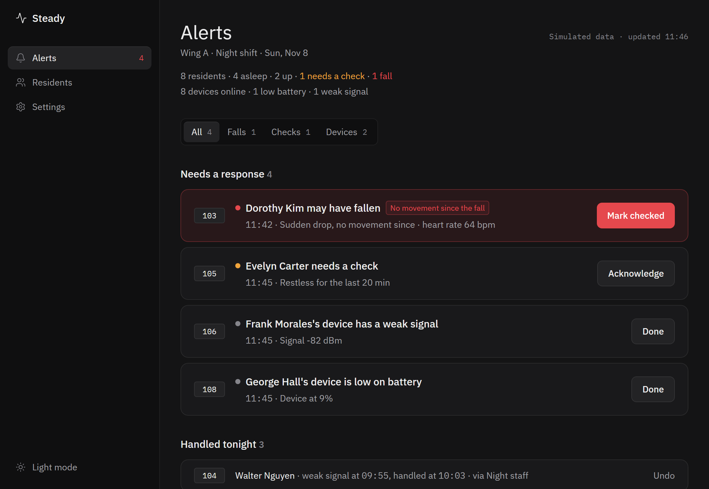
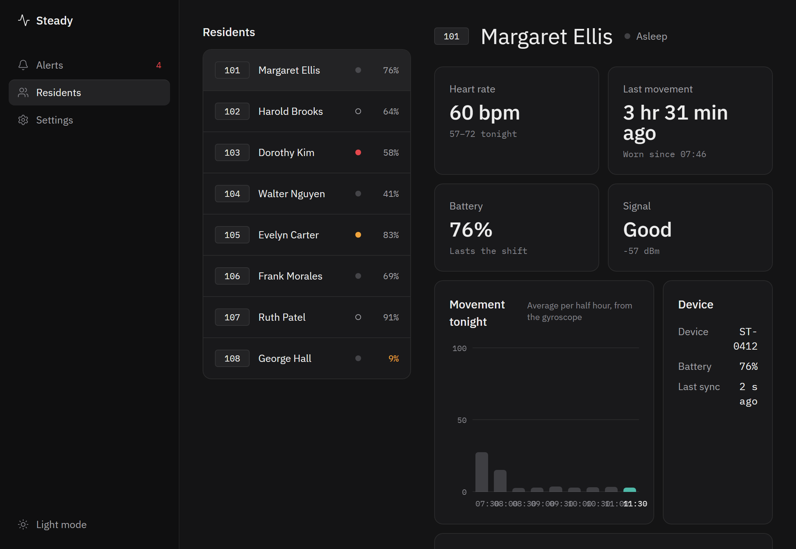
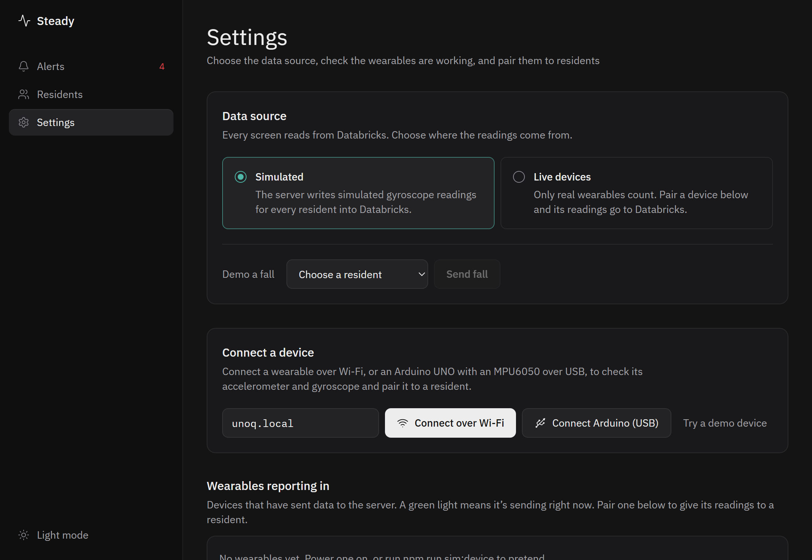

Steady · care-home fall triage
of care-home falls are unwitnessed.
Steady shortens the wait between a fall and a person at the bedside.
Mayes et al., JAMDA 2026 · 212 falls
Problem
The fall is survivable. The wait is what kills.
of people who lay over an hour died within 6 months (1981 cohort, 20 long lies).
of fallers over 90 lay there an hour or more.
of those fallers could not get up unaided.
They had call alarms. The alarms were not used.
Wild et al., BMJ 1981 · Fleming & Brayne, BMJ 2008
What exists today
What exists today, measured
These tools stop at detection or noise. None solves response.
Heinbüchner 2010 (52 pendant users) · Wen 2024 · Sendelbach & Funk 2013 · Chaudhuri 2015
What’s unique
Three claims, each measurable
Tiers as the dashboard shows them, highest first
Implementation
How it works
A wearable detects the fall on the device itself. The dashboard decides how urgent it is, and a person has to close it.
Pipeline
Triage
Detect
The board watches for weightlessness, then a hard impact, then a change of posture, and decides on the device.
Rank
Every open fall sits on one Alerts list, highest urgency first. Movement has to come from the wearer’s own device, so demo data can’t clear the top tier.
Close
A fall stays until staff click “Mark checked”, or a worker presses the button on the wearable. It then moves to “Handled tonight”, and Undo reopens it.
Product
What Steady does
One screen for the whole night shift, and a small device on each resident. Here is what the dashboard shows and what staff can do with it.
The whole wing at a glance
Every resident is shown as asleep, up, needs a check, or fallen, with the count at the top: “8 residents · 4 asleep · 2 up · 1 needs a check · 1 fall”.
One Alerts list
Falls, checks and device problems in urgency order, with tabs for All, Falls, Checks and Devices. Each has a clear action: Mark checked, Acknowledge or Done, and Undo if it was a mistake.
A page for every resident
Heart rate and tonight’s range, time since the last movement, battery, signal, and movement per half hour drawn from the gyroscope.
Restlessness checks
Someone who has been moving a lot for a sustained spell is flagged as “Restless for the last 20 min”, so staff can look in before it becomes a fall.
Device health, before it’s missed
Low battery, weak signal and a device that has stopped syncing each raise their own alert, so a flat wearable doesn’t look like a quiet resident.
Staff accounts
Staff log in through Auth0. A care home registers once, which creates its first administrator. Administrators invite caretakers by email, change roles and remove staff. Login is off until Auth0 is configured.
Setup in the Settings page
Pick Simulated or Live data, connect a wearable over Wi-Fi or USB, run a self-test (sending data, accelerometer reads gravity, gyroscope responds, fall detection fires), and pair the device to a resident.
Demo a fall
In Simulated mode, send a fall for any resident with one click, so the whole alert flow can be shown without hurting anyone or needing the hardware.
Room-level location
Three presses on the wearable start survey mode, which fingerprints the Wi-Fi in a room so a device can later be placed in a room, not at an exact position. Scanning does not yet run on the board.



Try it without a board
Switch Settings to Simulated and the server generates readings for every resident. Press Demo a fall to watch a fall arrive, get ranked and be closed.
No hardware? Try a demo device streams a built-in wearable so you can check the connection and the self-test.
npm run dev
Screenshots show Simulated mode. The residents, heart rate, battery and signal are demo values.
Hardware
A real board and a real sensor
Arduino UNO Q Board
Runs the fall detector on the device itself, not in the cloud. It has Wi-Fi, 4 GB of RAM and 32 GB of storage on board.
MPU6050 Sensor
A real accelerometer and gyroscope, read over I2C and checked every 5 ms so a landing spike is not missed between samples. It connects to the board with just a few wires: power, ground, data and clock.
USB or Wi-Fi Link
Over USB the dashboard reads the board straight from the browser (Chrome or Edge). Over Wi-Fi, a relay app on the board streams readings to the dashboard and posts one-second summaries to the server. The relay has been run on the board, streaming about 48 samples a second.
One button Acknowledge
One press by a worker at the bedside confirms they responded and resolves the open fall. Three presses start survey mode. Two presses are ignored as a fumbled double tap.
Open source. Firmware, relay, server and dashboard are all in the GitHub repository.
Under the hood
How a fall is detected
The rules run on the board and were tested on deliberate drops. They look for the shape of a fall, not just a bump.
The sensor is read over a ±8 g range every 5 ms. The alert tells staff what the device measured, for example “Fall detected by the device: peak 2.2 g, posture change 89°”.
Where the data goes
From board to dashboard
The board sends plain text lines: its id and firmware, battery, one motion sample (acceleration in g, rotation in degrees a second), a fall with its peak and tilt, and a worker’s button press. Two example lines:
F,2.2,89,90
The server
Batches of 10 to 200 samples a second are folded into one reading per second for the dashboard. The server keeps readings, alerts and pairings in a local store, or in Databricks when it is configured. A device token can protect the uplink.
The Worker
A separate Cloudflare Worker with a D1 database handles device ingest, server-side fall analysis and the Wi-Fi survey store. Ingest is idempotent, so a resent sample doesn’t count twice. Samples are kept for 30 days.
The stack
Every piece is open source and in one repository.
Viability
Real hardware, honest limits
Real today
- MPU6050 on the UNO Q.
- Fall detection on the board, tested with drops.
- Readings to dashboard to alerts, pairing.
- USB link, and a Wi-Fi relay streamed from the board.
- Urgency ranking of open falls.
Simulated, and labelled
- Heart rate, battery and signal.
- The other residents, shown only in Simulated mode.
- Live mode lists only residents with a paired wearable.
Not proven yet
- Detection is tuned on drops, not on people.
- Databricks has not run end to end.
- Staff login is optional and off by default.
- No retention or export policy for server data.
- Wi-Fi room scanning does not yet run on the board.
A threshold, not a certified detector. No measured false-positive rate yet.
Next: label real falls and measure false positives, then decide board placement, battery, enclosure and data retention.
Questions
Questions people ask
Does it replace night staff?
No. It tells staff who to see first. The point is to shorten the time between a fall and a person arriving, not to remove the person.
What if the resident can’t press anything?
They don’t need to. The wearable detects the fall itself. If nobody has moved for 45 seconds after the fall, it moves to the top of the list on its own.
Can an alert disappear by itself?
No. A fall stays on the Alerts page until staff click Mark checked or a worker presses the button on the wearable. Undo reopens it if it was a mistake.
What does it measure?
Movement from an accelerometer and gyroscope. Heart rate, battery and signal are shown in the dashboard but are simulated for now.
Who can see resident data?
Staff who log in, once Auth0 is configured: each care home has its own administrators and caretakers. Without it the dashboard is open, so it should only be used with demo data on a trusted network.
Is it a medical device?
No. It is a hackathon prototype and must not be relied on to detect falls or to replace care staff. The fall detector is a threshold, not a certified detector.
Can I try it?
Yes. It is open source. Run npm install then npm run dev and switch Settings to Simulated, no board needed. The GitHub repository has the instructions.
Steady does not stop falls.
It makes sure a fall is never waiting for a button press.